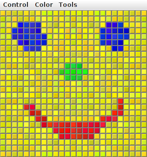

Section 6.7
Menus, Dialogs, and Complete Programs
We have already encountered many of the basic aspects of GUI programming, but professional programs use many additional features. We will cover some of the advanced features of GUI programming with Swing in Chapter 13, but in this section we look briefly at a few more features that are essential for writing GUI programs. I will discuss these features in the context of a "MosaicDraw" program that is shown in this picture:

The source code for the program is in the file MosaicDraw.java. The program also requires MosaicCanvas.java and MosaicDrawController.java. You will want to try it out!
As the user clicks-and-drags the mouse in the large drawing area of this program, it leaves a trail of little colored squares. There is some random variation in the color of the squares. (This is meant to make the picture look a little more like a real mosaic, which is a picture made out of small colored stones in which there would be some natural color variation.) There is a menu bar above the drawing area. The "Control" menu contains commands for filling and clearing the drawing area, along with a few options that affect the appearance of the picture. The "Color" menu lets the user select the color that will be used when the user draws. The "Tools" menu affects the behavior of the mouse. Using the default "Draw" tool, the mouse leaves a trail of single squares. Using the "Draw 3x3" tool, the mouse leaves a swath of colored squares that is three squares wide. There are also "Erase" tools, which let the user set squares back to their default black color.
The drawing area of the program is a panel that belongs to the MosaicCanvas class, a subclass of JPanel that is defined in MosaicCanvas.java. MosaicCanvas is a highly reusable class for representing mosaics of colored rectangles. It was also used behind the scenes in the sample program in Subsection 4.7.3. The MosaicCanvas class does not directly support drawing on the mosaic, but it does support setting the color of each individual square. The MosaicDraw program installs a mouse listener on the MosaicCanvas; the mouse listener responds to mousePressed and mouseDragged events on the canvas by setting the color of the square that contains the mouse. This is a nice example of applying a listener to an object to do something that was not programmed into the object itself.
The file MosaicDraw.java is a simple class that contains only the main() routine for the program. Most of the programming for MosaicDraw can be found in MosaicDrawController.java. (It might have gone into the MosaicCanvas class, if I had not decided to use that pre-existing class in unmodified form.) It is the MosaicDrawController class that creates a MosaicCanvas object and adds a mouse listener to it. It also creates the menu bar that is shown at the top of the program, and it implements all the commands in the menu bar. It has an instance method getMosaicCanvas() that returns a reference to the MosaicCanvas that it has created, and it has another instance method getMenuBar() that returns a menu bar for the program. These methods are used to obtain the canvas and menu bar so that they can be added to the program's window.
I urge you to study MosaicDrawController.java and MosaicDraw.java. I will not be discussing all aspects of the code here, but you should be able to understand it all after reading this section. As for MosaicCanvas.java, it uses some techniques that you would not understand at this point, but I encourage you to at least read the comments in that file to learn about the API for MosaicCanvas.
6.7.1 Menus and Menubars
MosaicDraw is the first example that we have seen that uses a menu bar. Fortunately, menus are very easy to use in Java. The items in a menu are represented by the class JMenuItem (this class and other menu-related classes are in package javax.swing). Menu items are used in almost exactly the same way as buttons. In fact, JMenuItem and JButton are both subclasses of a class, AbstractButton, that defines their common behavior. In particular, a JMenuItem is created using a constructor that specifies the text of the menu item, such as:
JMenuItem fillCommand = new JMenuItem("Fill");
You can add an ActionListener to a JMenuItem by calling the menu item's addActionListener() method. The actionPerformed() method of the action listener is called when the user selects the item from the menu. You can change the text of the item by calling its setText(String) method, and you can enable it and disable it using the setEnabled(boolean) method. All this works in exactly the same way as for a JButton.
The main difference between a menu item and a button, of course, is that a menu item is meant to appear in a menu rather than in a panel. A menu in Java is represented by the class JMenu. A JMenu has a name, which is specified in the constructor, and it has an add(JMenuItem) method that can be used to add a JMenuItem to the menu. For example, the "Tools" menu in the MosaicDraw program could be created as follows, where listener is a variable of type ActionListener:
JMenu toolsMenu = new JMenu("Tools"); // Create a menu with name "Tools"
JMenuItem drawCommand = new JMenuItem("Draw"); // Create a menu item.
drawCommand.addActionListener(listener); // Add listener to menu item.
toolsMenu.add(drawCommand); // Add menu item to menu.
JMenuItem eraseCommand = new JMenuItem("Erase"); // Create a menu item.
eraseCommand.addActionListener(listener); // Add listener to menu item.
toolsMenu.add(eraseCommand); // Add menu item to menu.
.
. // Create and add other menu items.
.
Once a menu has been created, it must be added to a menu bar. A menu bar is represented by the class JMenuBar. A menu bar is just a container for menus. It does not have a name, and its constructor does not have any parameters. It has an add(JMenu) method that can be used to add menus to the menu bar. The name of the menu then appears in the menu bar. For example, the MosaicDraw program uses three menus, controlMenu, colorMenu, and toolsMenu. We could create a menu bar and add the menus to it with the statements:
JMenuBar menuBar = new JMenuBar(); menuBar.add(controlMenu); menuBar.add(colorMenu); menuBar.add(toolsMenu);
The final step in using menus is to use the menu bar in a window such as a JFrame. We have already seen that a frame has a "content pane." The menu bar is another component of the frame, not contained inside the content pane. The JFrame class has an instance method setMenuBar(JMenuBar) that can be used to set the menu bar. (There can only be one, so this is a "set" method rather than an "add" method.) In the MosaicDraw program, the menu bar is created by a MosaicDrawController object and can be obtained by calling that object's getMenuBar() method. The main() routine in MosaicDraw.java gets the menu bar from the controller and adds it to the window. Here is the basic code that is used (in somewhat modified form) to set up the interface:
MosaicDrawController controller = new MosaicDrawController(); MosaicCanvas content = controller.getMosaicCanvas(); window.setContentPane( content ); // Use panel from controller as content pane. JMenuBar menuBar = controller.getMenuBar(); window.setJMenuBar( menuBar ); // Use the menu bar from the controller.
Using menus always follows the same general pattern: Create a menu bar. Create menus and add them to the menu bar. Create menu items and add them to the menus (and set up listening to handle action events from the menu items). Use the menu bar in a window by calling the window's setJMenuBar() method.
There are other kinds of menu items, defined by subclasses of JMenuItem, that can be added to menus. One of these is JCheckBoxMenuItem, which represents menu items that can be in one of two states, selected or not selected. A JCheckBoxMenuItem has the same functionality and is used in the same way as a JCheckBox (see Subsection 6.5.3). Three JCheckBoxMenuItems are used in the "Control" menu of the MosaicDraw program. One is used to turn the random color variation of the squares on and off. Another turns a symmetry feature on and off; when symmetry is turned on, the user's drawing is reflected horizontally and vertically to produce a symmetric pattern. And the third checkbox menu item shows and hides the "grouting" in the mosaic; the grouting is the gray lines that are drawn around each of the little squares in the mosaic. The menu item that corresponds to the "Use Randomness" option in the "Control" menu could be set up with the statements:
JMenuItem useRandomnessToggle = new JCheckBoxMenuItem("Use Randomness");
useRandomnessToggle.addActionListener(listener); // Set up a listener.
useRandomnessToggle.setSelected(true); // Randomness is initially turned on.
controlMenu.add(useRandomnessToggle); // Add the menu item to the menu.
In my program, the "Use Randomness" JCheckBoxMenuItem corresponds to a boolean-valued instance variable named useRandomness in the MosaicDrawController class. This variable is part of the state of the controller object. Its value is tested whenever the user draws one of the squares, to decide whether or not to add a random variation to the color of the square. When the user selects the "Use Randomness" command from the menu, the state of the JCheckBoxMenuItem is reversed, from selected to not-selected or from not-selected to selected. The ActionListener for the menu item checks whether the menu item is selected or not, and it changes the value of useRandomness to match. Note that selecting the menu command does not have any immediate effect on the picture that is shown in the window. It just changes the state of the program so that future drawing operations on the part of the user will have a different effect. The "Use Symmetry" option in the "Control" menu works in much the same way. The "Show Grouting" option is a little different. Selecting the "Show Grouting" option does have an immediate effect: The picture is redrawn with or without the grouting, depending on the state of the menu item.
My program uses a single ActionListener to respond to all of the menu items in all the menus. This is not a particularly good design, but it is easy to implement for a small program like this one, and it keeps all of the programming for responding to the menu items in the same place. The actionPerformed() method of the listener object uses the statement
String command = evt.getActionCommand();
to get the action command of the source of the event; this will be the text of the menu item. The listener tests the value of command to determine which menu item was selected by the user.
In the case when the menu item is a JCheckBoxMenuItem, the listener must check the state of the menu item. The listener can get its hands on the menu item object by calling evt.getSource(). Since the return value of getSource() is of type Object, the return value must be type-cast to the correct type. Here, for example, is the code that handles the "Use Randomness" command:
if (command.equals("Use Randomness")) {
// Set the value of useRandomness depending on the menu item's state.
JCheckBoxMenuItem toggle = (JCheckBoxMenuItem)evt.getSource();
useRandomness = toggle.isSelected();
}
(The actionPerformed() method uses a rather long if..then..else statement to check all the possible action commands. It might be more natural and efficient use a switch statement with command as the selector and all the possible action commands as cases.)
In addition to menu items, a menu can contain lines that separate the menu items into groups. In the MosaicDraw program, the "Control" menu contains such a separator. A JMenu has an instance method addSeparator() that can be used to add a separator to the menu. For example, the separator in the "Control" menu was created with the statement:
controlMenu.addSeparator();
A menu can also contain a submenu. The name of the submenu appears as an item in the main menu. When the user moves the mouse over the submenu name, the submenu pops up. (There is no example of this in the MosaicDraw program.) It is very easy to do this in Java: You can add one JMenu to another JMenu using a statement such as mainMenu.add(submenu), and it becomes a submenu.
6.7.2 Dialogs
One of the commands in the "Color" menu of the MosaicDraw program is "Custom Color...". When the user selects this command, a new window appears where the user can select a color. This window is an example of a dialog or dialog box. A dialog is a type of window that is generally used for short, single purpose interactions with the user. For example, a dialog box can be used to display a message to the user, to ask the user a question, to let the user select a file to be opened, or to let the user select a color. In Swing, a dialog box is represented by an object belonging to the class JDialog or to a subclass.
The JDialog class is very similar to JFrame and is used in much the same way. Like a frame, a dialog box is a separate window. Unlike a frame, however, a dialog is not completely independent. Every dialog is associated with a frame (or another dialog), which is called its parent window. The dialog box is dependent on its parent. For example, if the parent is closed, the dialog box will also be closed. It is possible to create a dialog box without specifying a parent, but in that case an invisible frame is created by the system to serve as the parent.
Dialog boxes can be either modal or modeless. When a modal dialog is created, its parent frame is blocked. That is, the user will not be able to interact with the parent until the dialog box is closed. Modeless dialog boxes do not block their parents in the same way, so they seem a lot more like independent windows. In practice, modal dialog boxes are easier to use and are much more common than modeless dialogs. All the examples we will look at are modal.
Aside from having a parent, a JDialog can be created and used in the same way as a JFrame. However, I will not give any examples here of using JDialog directly. Swing has many convenient methods for creating common types of dialog boxes. For example, the color choice dialog that appears when the user selects the "Custom Color" command in the MosaicDraw program belongs to the class JColorChooser, which is a subclass of JDialog. The JColorChooser class has a static method that makes color choice dialogs very easy to use:
Color JColorChooser.showDialog(Component parentComp,
String title, Color initialColor)
When you call this method, a dialog box appears that allows the user to select a color. The first parameter specifies the parent of the dialog; the parent window of the dialog will be the window (if any) that contains parentComp; this parameter can be null and it can itself be a frame or dialog object. The second parameter is a string that appears in the title bar of the dialog box. And the third parameter, initialColor, specifies the color that is selected when the color choice dialog first appears. The dialog has a sophisticated interface that allows the user to select a color. When the user presses an "OK" button, the dialog box closes and the selected color is returned as the value of the method. The user can also click a "Cancel" button or close the dialog box in some other way; in that case, null is returned as the value of the method. This is a modal dialog, and showDialog() does not return until the user dismisses the dialog box in some way. By using this predefined color chooser dialog, you can write one line of code that will let the user select an arbitrary color. Swing also has a JFileChooser class that makes it almost as easy to show a dialog box that lets the user select a file to be opened or saved.
The JOptionPane class includes a variety of methods for making simple dialog boxes that are variations on three basic types: a "message" dialog, a "confirm" dialog, and an "input" dialog. (The variations allow you to provide a title for the dialog box, to specify the icon that appears in the dialog, and to add other components to the dialog box. I will only cover the most basic forms here.)
A message dialog simply displays a message string to the user. The user (hopefully) reads the message and dismisses the dialog by clicking the "OK" button. A message dialog can be shown by calling the static method:
void JOptionPane.showMessageDialog(Component parentComp, String message)
The message can be more than one line long. Lines in the message should be separated by newline characters, \n. New lines will not be inserted automatically, even if the message is very long. For example, assuming that the special variable this refers to a Component:
JOptionPane.showMessageDialog( this, "This program is about to crash!\n"
+ "Sorry about that.");
An input dialog displays a question or request and lets the user type in a string as a response. You can show an input dialog by calling:
String JOptionPane.showInputDialog(Component parentComp, String question)
Again, parentComp can be null, and the question can include newline characters. The dialog box will contain an input box, an "OK" button, and a "Cancel" button. If the user clicks "Cancel", or closes the dialog box in some other way, then the return value of the method is null. If the user clicks "OK", then the return value is the string that was entered by the user. Note that the return value can be an empty string (which is not the same as a null value), if the user clicks "OK" without typing anything in the input box. If you want to use an input dialog to get a numerical value from the user, you will have to convert the return value into a number (see Subsection 3.7.2). As an example,
String name; name = JOptionPanel.showInputDialog(null, "Hi! What's your name?"); if (name == null) JOptionPane.showMessageDialog(null, "Well, I'll call you Grumpy."); else JOptionPane.showMessageDialog(null, "Pleased to meet you, " + name);
Finally, a confirm dialog presents a question and three response buttons: "Yes", "No", and "Cancel". A confirm dialog can be shown by calling:
int JOptionPane.showConfirmDialog(Component parentComp, String question)
The return value tells you the user's response. It is one of the following constants:
- JOptionPane.YES_OPTION — the user clicked the "Yes" button
- JOptionPane.NO_OPTION — the user clicked the "No" button
- JOptionPane.CANCEL_OPTION — the user clicked the "Cancel" button
- JOptionPane.CLOSE_OPTION — the dialog was closed in some other way.
By the way, it is possible to omit the Cancel button from a confirm dialog by calling one of the other methods in the JOptionPane class. Just call:
JOptionPane.showConfirmDialog(
parent, question, title, JOptionPane.YES_NO_OPTION )
The final parameter is a constant which specifies that only a "Yes" button and a "No" button should be used. The third parameter is a string that will be displayed as the title of the dialog box window.
A small demo program, SimpleDialogDemo.java is available to demonstrate JColorChooser and several JOptionPane dialogs.
6.7.3 Fine Points of Frames
In previous sections, whenever I used a frame, I created a JFrame object in a main() routine and installed a panel as the content pane of that frame. This works fine, but a more object-oriented approach is to define a subclass of JFrame and to set up the contents of the frame in the constructor of that class. This is what I did in the case of the MosaicDraw program. MosaicDraw is defined as a subclass of JFrame. The definition of this class is very short, but it illustrates several new features of frames that I want to discuss:
public class MosaicDraw extends JFrame {
public static void main(String[] args) {
JFrame window = new MosaicDraw();
window.setDefaultCloseOperation(JFrame.EXIT_ON_CLOSE);
window.setVisible(true);
}
public MosaicDraw() {
super("Mosaic Draw");
MosaicDrawController controller = new MosaicDrawController();
setContentPane( controller.getMosaicCanvas() );
setJMenuBar( controller.getMenuBar() );
pack();
Dimension screensize = Toolkit.getDefaultToolkit().getScreenSize();
setLocation( (screensize.width - getWidth())/2,
(screensize.height - getHeight())/2 );
}
}
The constructor in this class begins with the statement super("Mosaic Draw"), which calls the constructor in the superclass, JFrame. The parameter specifies a title that will appear in the title bar of the window. The next three lines of the constructor set up the contents of the window; a MosaicDrawController is created, and the content pane and menu bar of the window are obtained from the controller. The next line is something new. If window is a variable of type JFrame (or JDialog), then the statement window.pack() will resize the window so that its size matches the preferred size of its contents. (In this case, of course, "pack()" is equivalent to "this.pack()"; that is, it refers to the window that is being created by the constructor.) The pack() method is usually the best way to set the size of a window. Note that it will only work correctly if every component in the window has a correct preferred size. This is only a problem in two cases: when a panel is used as a drawing surface and when a panel is used as a container with a null layout manager. In both these cases there is no way for the system to determine the correct preferred size automatically, and you should set a preferred size by hand. For example:
panel.setPreferredSize( new Dimension(400, 250) );
The last two lines in the constructor position the window so that it is exactly centered on the screen. The line
Dimension screensize = Toolkit.getDefaultToolkit().getScreenSize();
determines the size of the screen. The size of the screen is screensize.width pixels in the horizontal direction and screensize.height pixels in the vertical direction. The setLocation() method of the frame sets the position of the upper left corner of the frame on the screen. The expression "screensize.width - getWidth()" is the amount of horizontal space left on the screen after subtracting the width of the window. This is divided by 2 so that half of the empty space will be to the left of the window, leaving the other half of the space to the right of the window. Similarly, half of the extra vertical space is above the window, and half is below.
Note that the constructor has created the window and set its size and position, but that at the end of the constructor, the window is not yet visible on the screen. (More exactly, the constructor has created the window object, but the visual representation of that object on the screen has not yet been created.) To show the window on the screen, it will be necessary to call its instance method, window.setVisible(true).
In addition to the constructor, the MosaicDraw class includes a main() routine. This makes it possible to run MosaicDraw as a stand-alone application. (The main() routine, as a static method, has nothing to do with the function of a MosaicDraw object, and it could (and perhaps should) be in a separate class.) The main() routine creates a MosaicDraw and makes it visible on the screen. It also calls
window.setDefaultCloseOperation(JFrame.EXIT_ON_CLOSE);
which means that the program will end when the user closes the window. Note that this is not done in the constructor because doing it there would make MosaicDraw less flexible. It is possible, for example, to write a program that lets the user open multiple MosaicDraw windows. In that case, we don't want to shut down the whole program just because the user has closed one of the windows. There are other possible values for the default close operation of a window:
- JFrame.DO_NOTHING_ON_CLOSE — the user's attempts to close the window by clicking its close box will be ignored, except that it will generate a WindowEvent. A program can listen for this event and take any action it wants when the user attempts to close the window.
- JFrame.HIDE_ON_CLOSE — when the user clicks its close box, the window will be hidden just as if window.setVisible(false) were called. The window can be made visible again by calling window.setVisible(true). This is the value that is used if you do not specify another value by calling setDefaultCloseOperation.
- JFrame.DISPOSE_ON_CLOSE — the window is closed and any operating system resources used by the window are released. It is not possible to make the window visible again. (This is the proper way to permanently get rid of a window without ending the program. You can accomplish the same thing programmatically by calling the instance method window.dispose().)
6.7.4 Creating Jar Files
Java classes and resource files are often distributed in jar ("java archive") files. For a program that consists of multiple files, it can make sense to pack them into a single jar file. As the last topic for this chapter, we look at how to do that. The program can be run directly from the jar file, without unpacking it. A jar file can be "executable," meaning that it specifies the class that contains the main() routine that will be run when the jar file is executed. If you have an executable jar file that does not require any resources external to the jar file, you can run it on the command line using a command of the form:
java -jar JarFileName.jar
and you might even be able to run the jar file by double-clicking its icon in a file browser window. if the jar file is not executable, you can add the name of the class that contains the main program to the command:
java -jar JarFileName.jar MyMainClass
The question, then, is how to create a jar file. The answer depends on what programming environment you are using. The two basic types of programming environment—command line and IDE—were discussed in Section 2.6. Any IDE (Integrated Development Environment) for Java should have a command for creating jar files. In the Eclipse IDE, for example, it can be done as follows: In the Package Explorer pane, select the programming project (or just all the individual source and resource files that you want to include). Right-click on the selection, and choose "Export" from the menu that pops up. In the window that appears, select "JAR file" and click "Next". In the window that appears next, enter a full path name for the jar file in the box labeled "JAR file". (Click the "Browse" button next to this box to select the file name using a file dialog box.) The name of the file should end with ".jar". If you are creating a regular jar file, not an executable one, you can hit "Finish" at this point, and the jar file will be created. To create an executable file, hit the "Next" button twice to get to the "Jar Manifest Specification" screen. At the bottom of this screen is an input box labeled "Main class". You have to enter the name of the class that contains the main() routine that will be run when the jar file is executed. If you hit the "Browse" button next to the "Main class" box, you can select the class from a list of classes that contain main() routines. Once you've selected the main class, you can click the "Finish" button to create the executable jar file.
It is also possible to create jar files on the command line. The Java Development Kit includes a command-line program named jar that can be used to create jar files. If all your classes are in the default package (like most of the examples in this book), then the jar command is easy to use. To create a non-executable jar file on the command line, change to the directory that contains the class files that you want to include in the jar. Then give the command
jar cf JarFileName.jar *.class
where JarFileName can be any name that you want to use for the jar file. The "*" in "*.class" is a wildcard that makes *.class match every class file in the current directory. This means that all the class files in the directory will be included in the jar file. If you want to include only certain class files, you can name them individually, separated by spaces. If the program uses resource files, such as images, they should also be listed in the command. (Things get more complicated if your classes and resources are not in the default package. In that case, the files must be in subdirectories of the directory in which you issue the jar command, and you have to include the path to the file in the name. For example: textio/TextIO.class on MacOS and Linux, or textio\TextIO.class on Windows.)
Making an executable jar file on the command line is only a little more complicated. There has to be some way of specifying which class contains the main() routine. This can be done by adding the -e option to the command, with a value giving the full name of the class that is to be executed when the jar file is run. For example, if the name of the class is MyMainClass, then the jar file could be created with:
jar -c -f JarFileName.jar -e MyMainClass *.class
For a program defined in two packages, grapher.ui and grapher.util, with a main class defined in the file Main.java in package grapher.ui, the command would become
jar -c -f Grapher.jar -e grapher.ui.Main grapher/ui/*.class grapher/util/*.class
except that on Windows, the slashes would be replaced by backslashes.
(The options -c, -f, and -e are abbreviations for the longer forms --create, --file, and --main-class, and you can use the longer forms, if you prefer clarity to brevity.)
6.7.5 jpackage
You can collect the class files and resource files for a program into a jar file, and you can give that jar file to someone who would like to use your program. However, that person will still need to have Java installed on their computer—something that is really not very likely these days, unless that person is a Java developer. A possible solution is to bundle a Java virtual machine along with your program. The Java Development Kit includes the jpackage command to make that possible.
The jpackage command can create an installer that will install your program along with as much Java support as is needed to run it. It has some significant limitations. It can only make an installer for the type of computer and operating system that you are using; for example, it is not possible to use jpackage on Linux to make an installer for Windows. And the files that it makes are very large, since they have to include large parts of a Java execution environment. So jpackage is really meant for packaging large, serious applications. But if you want to try it, here is a basic example, using only a few of the options that are available for jpackage. For the example, I made an installer for the network poker game from Subsection 12.5.4. This might also help you understand how to work with packages in general.
To use jpackage, you need a jar file that contains the classes and resource files for your program. The poker game uses classes from the packages netgame.common and netgame.fivecarddraw, plus a resource image file cards.png in netgame.fivecarddraw. To make the jar file, I first compiled the java files by giving the following command in the directory that contained the netgame directory:
javac netgame/common/*.java netgame/fivecarddraw/*.java
and then created a jar file, Poker.jar, with this command, typed all on one line:
jar -c -f Poker.jar netgame/common/*.class netgame/fivecarddraw/*.class
netgame/fivecarddraw/cards.png
It is important to include the image resource file along with the class files. (Note that on Windows, the slashes, "/", would be replaced by backslashes, "\".)
I moved Poker.jar to a new directory. Working in that new directory, I used the following jpackage command, again typed all on one line:
jpackage --input . --main-jar Poker.jar
--main-class netgame.fivecarddraw.Main --name NetPoker
The value for the --input option is a period, which represents the current working directory; it could be replaced by a path to the directory that contains Poker.jar. The value for the --main-class option is the full name of the class that contains the main program; this option is not needed if the jar file is executable. The value of the --name option is used to name the installer and to name the executable file that it will install.
When used on my computer, running Linux Mint, this produced a file named netpoker_1.0-1_amd64.deb that I could then install in the usual way. It installed the poker executable as /opt/netpoker/bin/NetPoker.
On MacOS 10.15, using the JDK from adoptium.net (see Subsection 2.6.1), I found that jpackage was installed as part of the JDK, but it was not made available on the command-line. I was able to define it myself as an alias:
alias jpackage=
"/Library/Java/JavaVirtualMachines/temurin-17.jdk/Contents/Home/bin/jpackage"
Again, type this all on one line. With that done, I used the same commands as given above. The result was a .dmg file containing a program, netpoker.app, that could be run by double-clicking. (The jpackage command might be properly set up in newer versions of MacOS.)
The jpackage command should also work on Windows, but it requires something called the "WiX toolset" in addition to the JDK. I have not tried it.